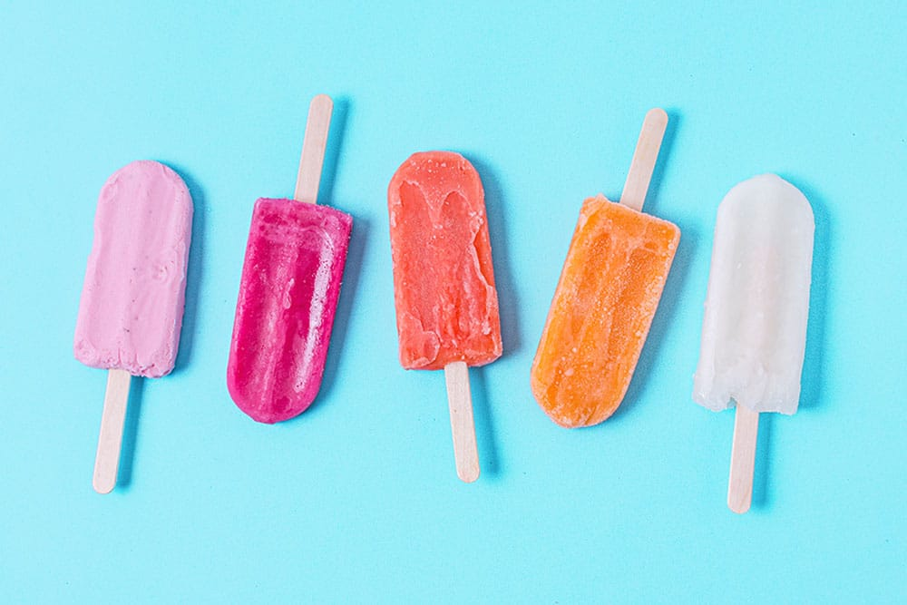

Picolé Natural
Médio - 40m
Para você que gosta de um doce gelado no verão, não se preocupe, também temos uma receita saudáve. O picolé natural de frutas encerra a primeira parte de sua jornada.
- Pedaços de frutas de sua preferência;
- Suco natural de laranja.
INICIAR PREPARO